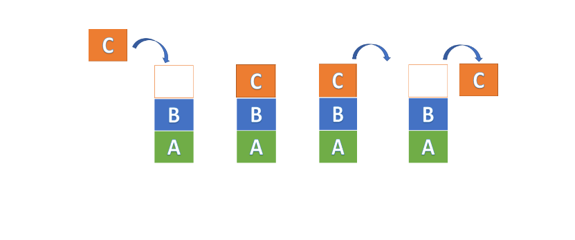
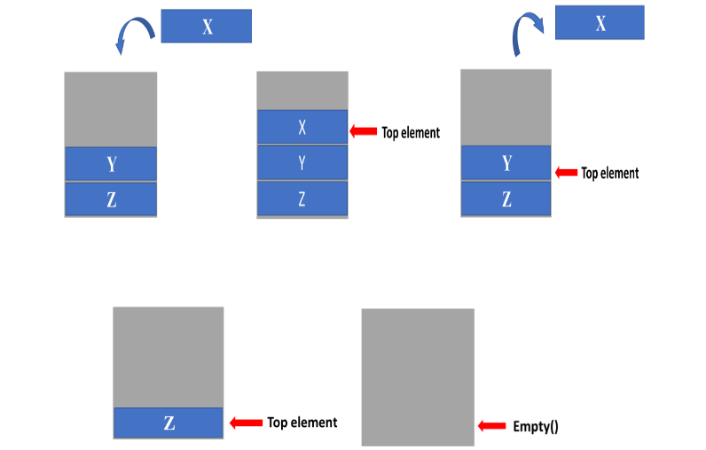
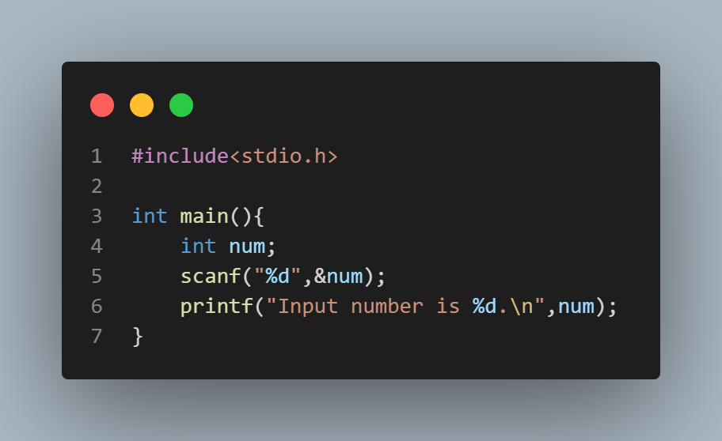

Stack Algorithm
Stores a list of items in which an item can be added to or removed from the list only at one end.
LIFO Principle of Stack :-
Stack follows LIFO (last in, first out) order or approach in which the operations are performed. This means that the element which was added last to the stack will be the first element to be removed from the stack. Stack Operations :-
push(x) :- Add an element to the top of a stack.
pop(x) :- Remove an element from the top of a stack.
top() :- Point the top most element.
empty() :- Tests if the stack is empty.
Example :-

Process :-
Step 1 :-
We initially have the element Y and Z. We have pushed element X into the stack. The top of the stack will point to the element X.Step 2 :-
We have then performed a pop operation, removing the top element from the stack. The element X is popped from the stack. The top of the stack now points to the element Y.Step 3 :-
When the pop operation is performed then the top most element will be changed.Step 4 :-
Finally, the empty() operation checks if the stack is empty or not. The top of an empty stack is set to -1.*When the stack is empty it returns “True”.
*When a stack has few elements or is full then it’s return “False”.
CP Problem :-
Alice is rearranging her library. She takes the innermost shelf and reverses the order of books. She breaks the walls of the shelf. In the end, there will be only books and no shelf walls. Print the order of books. Opening and closing walls of shelves are shown by '/' and '\' respectively whereas books are represented by lowercase alphabets.Input format:-
The first line contains a string displaying her library.Output format:-
Print only one string displaying Alice's library after rearrangement.Constraints:-
2 grather than or equal |s| smaller than or equal 1000Note:-
The first character of the string is '/' and the last character of the string is '\' indicating the outermost walls of the shelf.Sample Input Sample Output
/u/love\i\ iloveuTime limit:-
2Memory limit:-
256Solution:-
Watch the video for understande more-